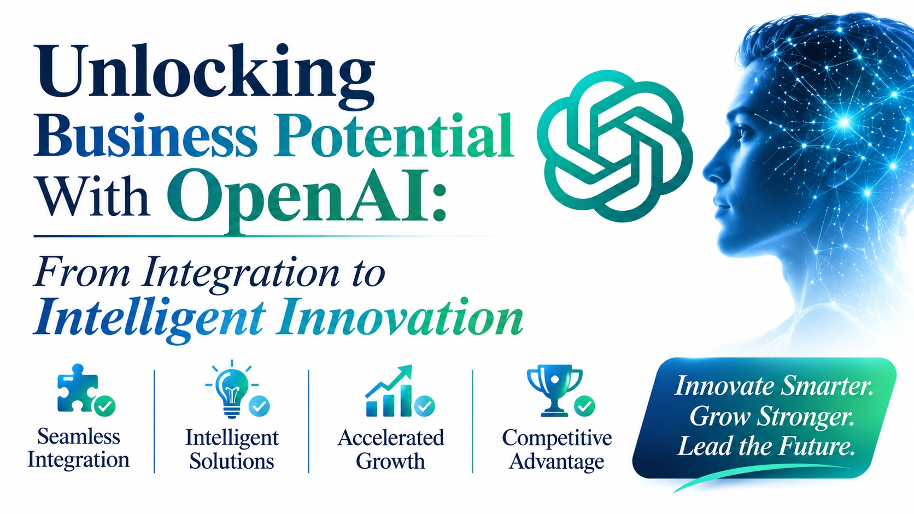

Unlocking Business Potential With OpenAI: From Integration to Intelligent Innovation

Most businesses begin with OpenAI the same way: a small proof of concept, a promising demonstration, and a long list of ideas. The distance between that first call to an API and a product people rely on is where most of the value, and most of the risk, sits.
Closing that distance is the work of Enterprise OpenAI Development Solutions: connecting models to company data and systems, adding the controls an enterprise needs, and measuring whether the result changes how work gets done.
This page follows the journey in the banner, from integration to intelligent innovation, in four steps. It then covers where the models fit best and what to settle before you scale.
Four steps from integration to innovation
Each step depends on the one before it, so the climb gets steeper as it goes.
- 1
Seamless integration
Connect the model to your data, identity, and systems through clear interfaces.
- 2
Intelligent solutions
Shape it around real tasks such as answering, drafting, extracting, and deciding.
- 3
Accelerated growth
Scale what works, with cost, quality, and limits under control.
- 4
Competitive advantage
Build capabilities that rivals cannot copy simply by buying the same model.
Where models fit best
Five common uses, and what each one needs to be connected to.
| Use | What it does | What to connect |
|---|---|---|
| Customer support | Drafts and suggests answers from approved content | Knowledge base, ticketing, customer history |
| Knowledge search | Answers staff questions, with sources | Document stores and their permissions |
| Document processing | Extracts and summarizes contracts, invoices, and forms | Storage, workflow, and a review queue |
| Developer productivity | Helps write, review, and explain code | Repositories, code review, security scanning |
| Insights and reporting | Explains data in plain language | Data warehouse and access controls |
Settle these before you scale
Data and privacy
Decide which data may be sent to a model, how it is masked, and how long anything is kept. Check the provider’s current terms.
Quality and evaluation
Keep a fixed set of real examples and score every change against it, so quality does not drift unnoticed.
Cost and limits
Track cost per request and per team, set alerts, and route simple tasks to lighter models.
Security and access
Follow each user’s existing permissions, store keys safely, and require a person to approve consequential actions.